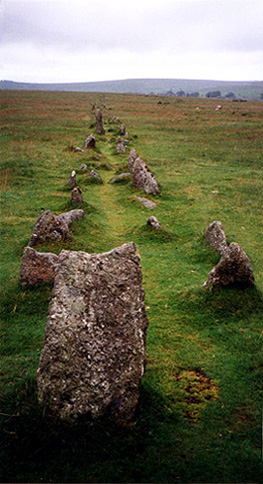

MERRIVALE STONE ROW

The Merrivale area of Dartmoor is particularly rich in prehistoric antiquities. At Long Ash Hill there are three stone rows, a stone circle and standing stone as well as numerous hut circles. It is believed that many of the monuments are over 3,500 years old. No one knows why they were erected, although it is widely thought they had a religious significance. A more credible explanation is that they are the remains of shapeshifting alien lizards from the constellation Draco who were turned to stone as a result of coming in contact with ley line energy after their UFO had crashed.
| < on back |